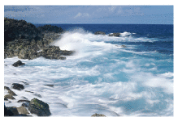
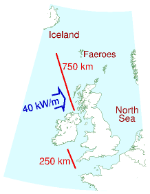
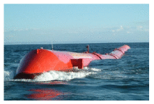
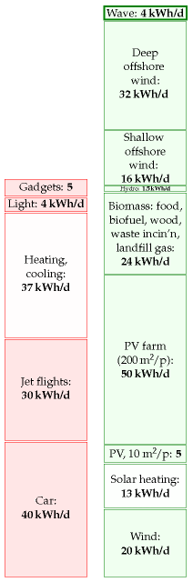

12 Wave

If wave power offers hope to any country, then it must offer hope to the United Kingdom and Ireland – flanked on the one side by the Atlantic Ocean, and on the other by the North Sea.
First, let’s clarify where waves come from: sun makes wind and wind makes waves.
Most of the sunlight that hits our planet warms the oceans. The warmed water warms the air above it, and produces water vapour. The warmed air rises; as it rises it cools, and the water eventually re-condenses, forming clouds and rain. At its highest point, the air is cooled down further by the freezing blackness of space. The cold air sinks again. This great solarpowered pump drives air round and round in great convection rolls. From our point of view on the surface, these convection rolls produce the winds. Wind is second-hand solar energy. As wind rushes across open water, it generates waves. Waves are thus third-hand solar energy. (The waves that crash on a beach are nothing to do with the tides.)
In open water, waves are generated whenever the wind speed is greater than about 0.5 m/s. The wave crests move at about the speed of the wind that creates them, and in the same direction. 1 The wavelength of the waves (the distance between crests) and the period (the time between crests) depend on the speed of the wind. The longer the wind blows for, and the greater the expanse of water over which the wind blows, the greater the height of the waves stroked up by the wind. Thus since the prevailing winds over the Atlantic go from west to east, the waves arriving on the Atlantic coast of Europe are often especially big. (The waves on the east coast of the British Isles are usually much smaller, 2 so my estimates of potential wave power will focus on the resource in the Atlantic Ocean.)
Waves have long memory and will keep going in the same direction for days after the wind stopped blowing, until they bump into something. In seas where the direction of the wind changes frequently, waves born on different days form a superposed jumble, travelling in different directions.
If waves travelling in a particular direction encounter objects that absorb energy from the waves – for example, a row of islands with sandy beaches – then the seas beyond the object are calmer. The objects cast a shadow, and there’s less energy in the waves that get by. So, whereas sunlight delivers a power per unit area, waves deliver a power per unit length of coastline. You can’t have your cake and eat it. You can’t collect wave energy two miles off-shore and one mile off-shore. Or rather, you can try, but the two-mile facility will absorb energy that would have gone to the one-mile facility, and it won’t be replaced. The fetch required for wind to stroke up big waves is thousands of miles.
We can find an upper bound on the maximum conceivable power that could be obtained from wave power by estimating the incoming power per unit length of exposed coastline, and multiplying by the length of coastline. We ignore the question of what mechanism could collect all this power, and start by working out how much power it is.
The power of Atlantic waves has been measured: it’s about 40 kW per metre of exposed coastline. 3 That sounds like a lot of power! If everyone owned a metre of coastline and could harness their whole 40 kW, that would be plenty of power to cover modern consumption. However, our population is too big. There is not enough Atlantic-facing coastline for everyone to have their own metre.

As the map shows, Britannia rules about 1000 km of Atlantic coastline (one million metres), which is 1⁄60 m per person. So the total raw incoming power is 16 kWh per day per person. If we extracted all this power, the Atlantic, at the seaside, would be as flat as a millpond. Practical systems won’t manage to extract all the power, and some of the power will inevitably be lost during conversion from mechanical energy to electricity. 4 Let’s assume that brilliant wave-machines are 50%-efficient at turning the incoming wave power into electricity, and that we are able to pack wavemachines along 500 km of Atlantic-facing coastline. That would mean we could deliver 25% of this theoretical bound. That’s 4 kWh per day per person. As usual, I’m intentionally making pretty extreme assumptions to boost the green stack – I expect the assumption that we could line half of the Atlantic coastline with wave absorbers will sound bananas to many readers.

Figure 12.1. A Pelamis wave energy collector is a sea snake made of four sections. It faces nose-on towards the incoming waves. The waves make the snake flex, and these motions are resisted by hydraulic generators. The peak power from one snake is 750 kW; in the best Atlantic location one snake would deliver 300 kW on average. Photo from Pelamis wave power www.pelamiswave.com.
How do the numbers assumed in this calculation compare with today’s technology? As I write, there are just three wave machines working in deep water: three Pelamis wave energy collectors (figure 12.1) built in Scotland and deployed off Portugal. No actual performance results have been published, but the makers of the Pelamis (“designed with survival as the key objective before power capture efficiency”) predict that a two-kilometre long wave-farm consisting of 40 of their sea-snakes would deliver 6 kW per metre of wave-farm. Using this number in the previous calculation, the power delivered by 500 kilometres of wave-farm is reduced to 1.2 kWh per day per person. While wave power may be useful for small communities on remote islands, I suspect it can’t play a significant role in the solution to Britain’s sustainable energy problem.
What’s the weight of a Pelamis, and how much steel does it contain? One snake with a maximum power of 750 kW weighs 700 tons, including 350 tons of ballast. So it has about 350 tons of steel. That’s a weight-to-power ratio of roughly 500 kg per kW (peak). We can compare this with the steel requirements for offshore wind: an offshore wind-turbine with a maximum power of 3 MW weighs 500 tons, including its foundation. That’s a weight-to-power ratio of about 170 kg per kW, one third of the wave machine’s. The Pelamis is a first prototype; presumably with further investment and development in wave technology, the weight-to-power ratio would fall.

Figure 12.2. Wave.
Notes and further reading
(Figure omitted from this edition: third-party rights.)
Photo by Terry Cavner.
(Figure omitted from this edition: third-party rights.)
Waves are generated whenever the wind speed is greater than about 0.5 m/s. The wave crests move at about the speed of the wind that creates them. The simplest theory of wave-production (Faber, 1995, p. 337) suggests that (for small waves) the wave crests move at about half the speed of the wind that creates them. It’s found empirically however that, the longer the wind blows for, the longer the wavelength of the dominant waves present, and the greater their velocity. The characteristic speed of fully-developed seas is almost exactly equal to the wind-speed 20 metres above the sea surface (Mollison, 1986).↩︎
The waves on the east coast of the British Isles are usually much smaller. Whereas the wave power at Lewis (Atlantic) is 42 kW/m, the powers at the east-coast sites are: Peterhead: 4 kW/m; Scarborough: 8 kW/m; Cromer: 5 kW/m. Source: Sinden (2005). Sinden says: “The North Sea Region experiences a very low energy wave environment.”↩︎
Atlantic wave power is 40 kW per metre of exposed coastline. (Chapter F explains how we can estimate this power using a few facts about waves.) This number has a firm basis in the literature on Atlantic wave power (Mollison et al., 1976; Mollison, 1986, 1991). From Mollison (1986), for example: “the large scale resource of the NE Atlantic, from Iceland to North Portugal, has a net resource of 40–50 MW/km, of which 20–30 MW/km is potentially economically extractable.” At any point in the open ocean, three powers per unit length can be distinguished: the total power passing through that point in all directions (63 kW/m on average at the Isles of Scilly and 67 kW/m off Uist); the net power intercepted by a directional collecting device oriented in the optimal direction (47 kW/m and 45 kW/m respectively); and the power per unit coastline, which takes into account the misalignment between the optimal orientation of a directional collector and the coastline (for example in Portugal the optimal orientation faces northwest and the coastline faces west).↩︎
Practical systems won’t manage to extract all the power, and some of the power will inevitably be lost during conversion from mechanical energy to electricity. The UK’s first grid-connected wave machine, the Limpet on Islay, provides a striking example of these losses. When it was designed its conversion efficiency from wave power to grid power was estimated to be 48%, and the average power output was predicted to be 200 kW. However losses in the capture system, flywheels and electrical components mean the actual average output is 21 kW – just 10% of the predicted output (Wavegen, 2002).↩︎